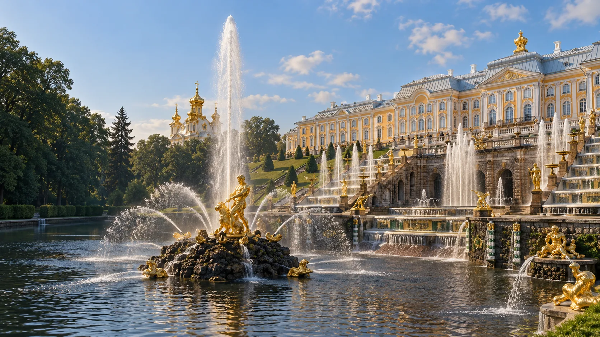

Подростково-молодёжный клуб
Бриг
г. Петергоф, ул. Разводная, д. 29А
Смотреть клуб
Молодёжные площадки района
Площадки ПМЦ в Петергофе, Ломоносове и Стрельне: от творчества до спорта.
Смотреть площадкиСведения сверены по открытым источникам. Набор, расписание и условия уточняй у организатора.
Каталог района
Ищи по названию, адресу или направлению.
Показано 10 площадок
г. Петергоф, ул. Разводная, д. 29А
Смотреть клубг. Ломоносов, ул. Михайловская, д. 51
Смотреть площадкупос. Стрельна, Санкт-Петербургское ш., д. 69А
Смотреть клубг. Петергоф, ул. Чичеринская, д. 11, корп. 4
Смотреть клубг. Петергоф, ул. Парковая, д. 16
Смотреть клубг. Ломоносов, ул. Александровская, д. 38Б
Смотреть клубпос. Стрельна, Санкт-Петербургское ш., д. 69А
Смотреть клубг. Петергоф, ул. Халтурина, д. 15, корп. 4
Смотреть клубг. Петергоф, ул. Шахматова, д. 12, корп. 3
Смотреть клубг. Ломоносов, ул. Победы, д. 20, корп. 2
Смотреть клубПодходящих площадок не найдено. Попробуй другой запрос.
Связаться с учреждением
Контакты учреждения
г. Петергоф, ул. Ботаническая, д. 4, корп. 3
Перед посещением
Спроси, для кого открыта группа.
Проверь дни, время и наличие мест.
Узнай, как присоединиться.
Состав, адреса и бесплатные направления взяты из городского документа ПМЦ, загруженного 01.06.2026. Администрация района также сообщает о десяти клубах. Для «Галса» и «Стрелы» в документе указан один адрес; место занятий уточняй у центра.